Scheda del ruolo: Amministratore
Obiettivo
L'Amministratore decide sulle richieste, toglie le prenotazioni quando serve, prenota per conto dei colleghi, abilita chi può usare le risorse riservate, cambia i ruoli e sceglie chi riceve le richieste. Ha accesso a tutta la copia di prova, quindi tocca solo la risorsa e le celle del proprio gruppo.
Cosa fare, passo per passo
Decidere sulle richieste
- Apri Richieste da Approvare. In alto ci sono i contatori (In attesa, Approvate, Rifiutate, Revocate) e i filtri Stato e Tipo. Tutte le Prenotazioni è la stessa pagina, con il filtro su Tutti.
- Trova la richiesta del tuo gruppo: leggi risorsa, Docente, data, ora e note (1 nell'immagine).
- Approva (2) apre una finestra che chiede «Approvare questa prenotazione?»: premi Approva (1 nella seconda immagine) per confermare, Annulla (2) per lasciare tutto com'è. Il Docente riceve un'email.
- Rifiuta (3) apre la finestra «Rifiuta la prenotazione», che chiede il Motivo del rifiuto (1 nella terza immagine): è obbligatorio. Scrivi qualcosa di utile e premi Rifiuta (2); nel campo, Ctrl+Invio conferma. Il motivo finisce nell'email al Docente.
- Le prenotazioni periodiche arrivano in una scheda «Serie di N prenotazioni». Mostra tutte le N date (1 nella quarta immagine) apre l'elenco. Approva intera serie (2 nella quarta immagine) e Rifiuta intera serie (3) decidono su tutte le date insieme, con un solo motivo.
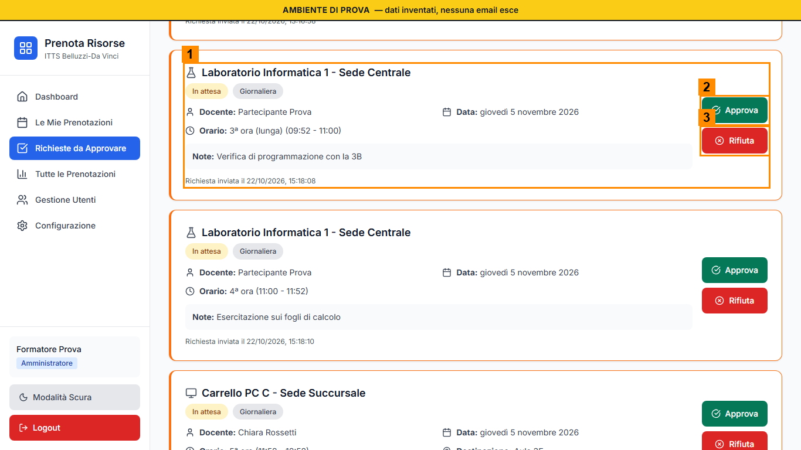
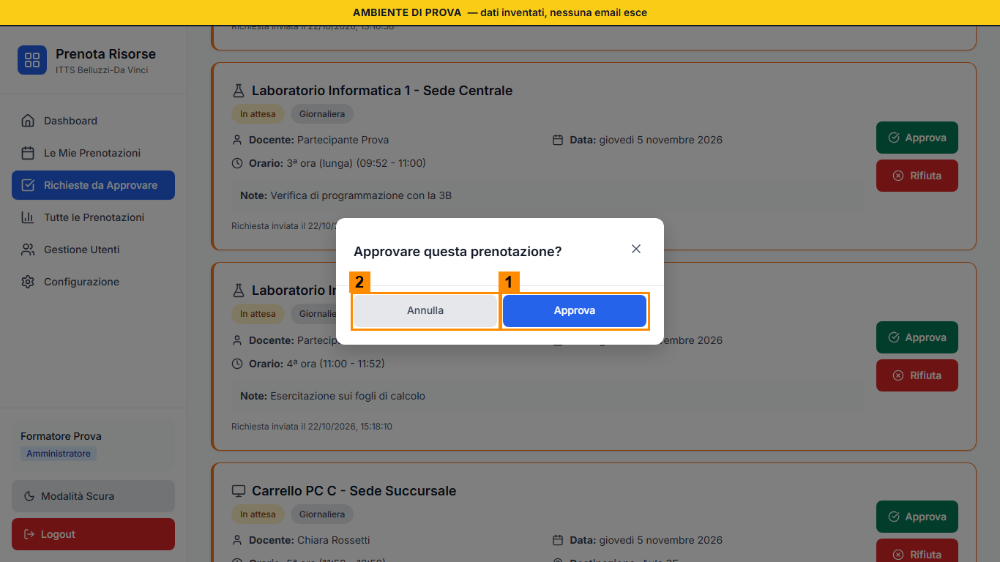
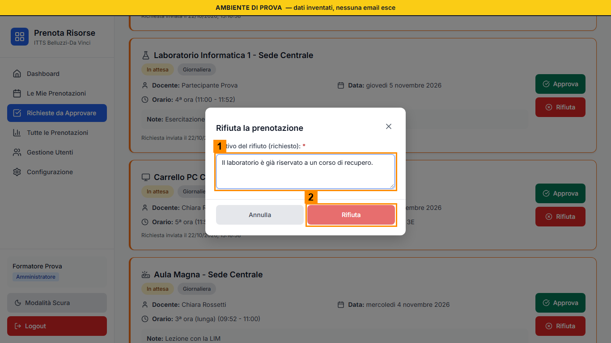
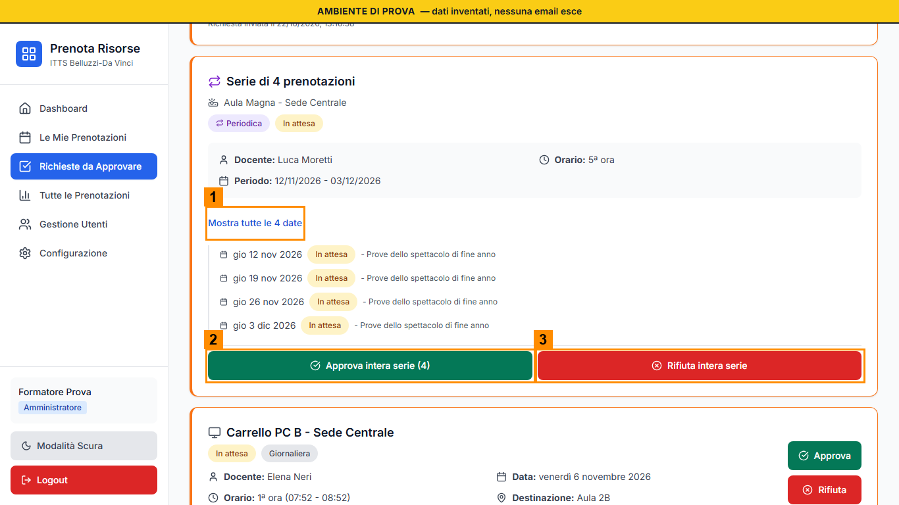
Revocare una prenotazione
- Sulle prenotazioni Approvate c'è Revoca, da Tutte le Prenotazioni o dal dettaglio nel calendario. Per le periodiche scegli cosa revocare: Solo questa (1), Questa e le successive (2) o Tutta la serie (3).
- Scrivi il Motivo della revoca (4 nella prima immagine, 1 nella seconda), obbligatorio e di almeno tre caratteri, e premi Conferma revoca (5 nella prima, 2 nella seconda). Dall'elenco la finestra si chiama «Revoca la prenotazione»; Annulla la chiude senza revocare. Il Docente vede l'etichetta Revocata con il motivo e riceve un'email. L'ora torna libera. Le richieste In attesa non si revocano: si rifiutano.
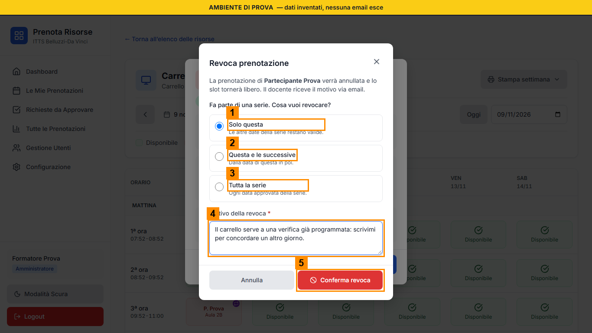
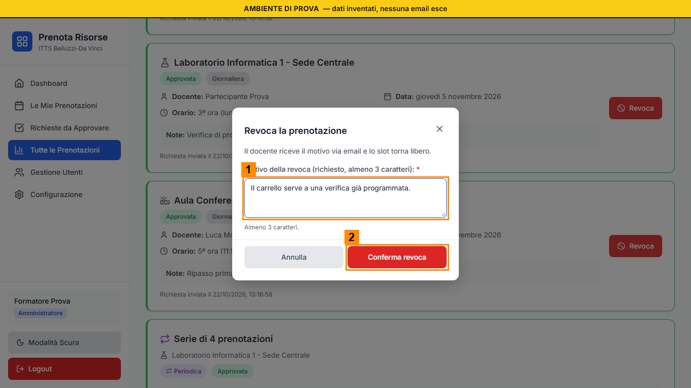
Prenotare per conto di un Docente
- Nella finestra Nuova prenotazione compare il riquadro Prenota per conto di: cerca il nome (1 nell'immagine) e scegli il Docente titolare della prenotazione (2). Di solito è «Me stesso».
- La prenotazione nasce già Approvata, intestata al Docente, e porta l'indicazione che l'ha creata l'amministrazione (1 nella seconda immagine). Il Docente riceve un'email.
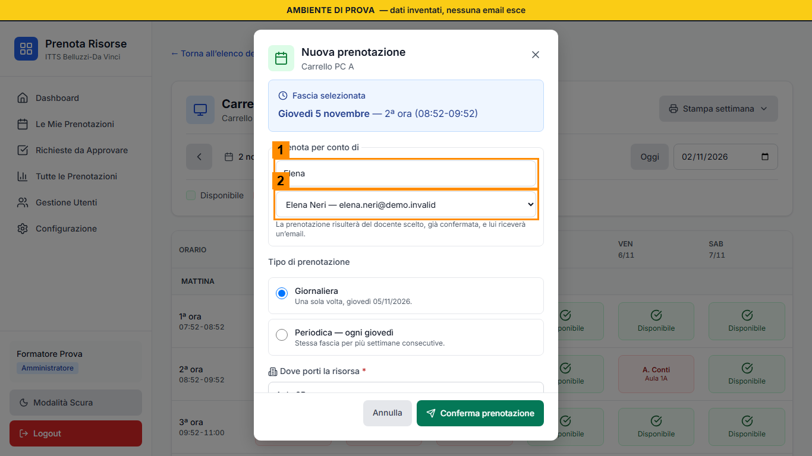
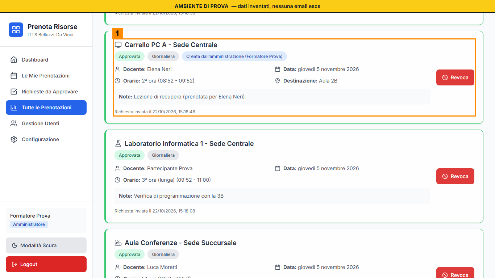
Abilitare i colleghi a una risorsa su autorizzazione
- Da Configurazione, Gestione risorse, premi Permessi sul Laboratorio Chimica (il comando compare solo sulle risorse ad accesso ristretto). Si apre l'elenco dei Docenti autorizzati, con la ricerca (1 nell'immagine) e una spunta per ciascuno (2).
- Salva permessi (3) sostituisce l'elenco intero, ed è uno solo per i due gruppi: salva prima il gruppo A, poi il gruppo B ricarica la pagina, spunta e salva. Non togliere le spunte degli altri.
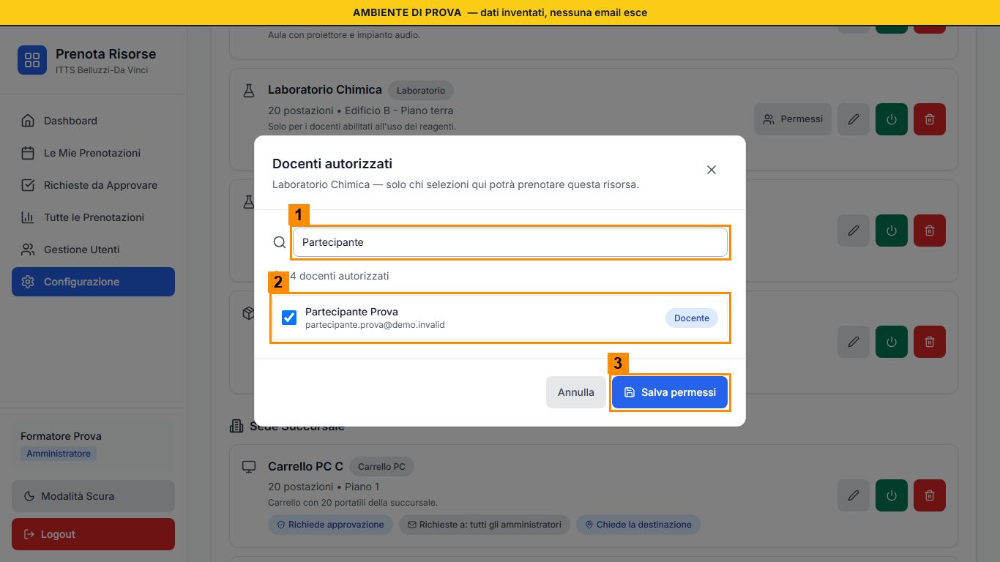
Cambiare i ruoli
- Da Gestione Utenti cerca la persona (campo di ricerca in alto). La tendina Ruolo (1 nell'immagine) offre Docente, Tecnico, Amministratore. Si apre la finestra «Cambiare il ruolo?», che spiega cosa comporta il cambio: per esempio «Rendere questa persona Tecnico? Vedrà l'area di amministrazione in sola lettura.» Premi Conferma (1 nella seconda immagine) oppure Annulla (2).
- Nella tua riga c'è «Tu» e non c'è la tendina: non puoi cambiare il tuo ruolo né bloccarti da solo. Blocca (2) toglie l'accesso al portale: in laboratorio non serve, non usarlo.
- La persona interessata preme Logout e rientra: il ruolo cambia solo all'accesso.
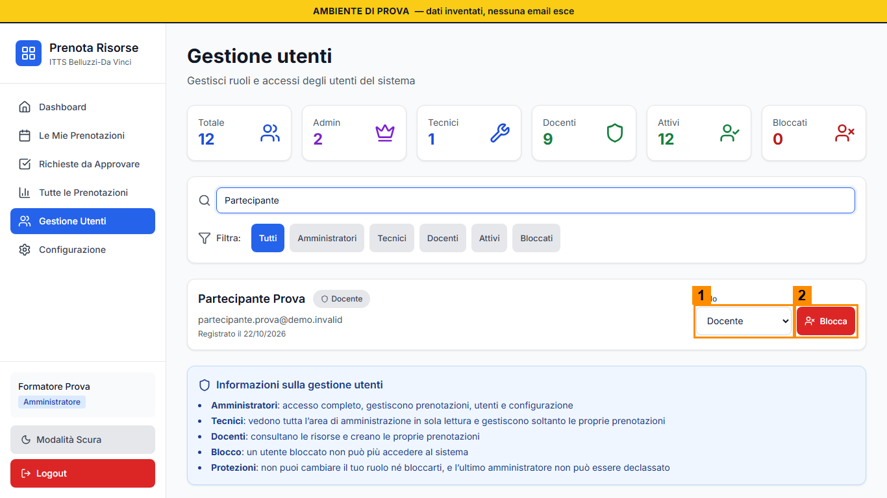
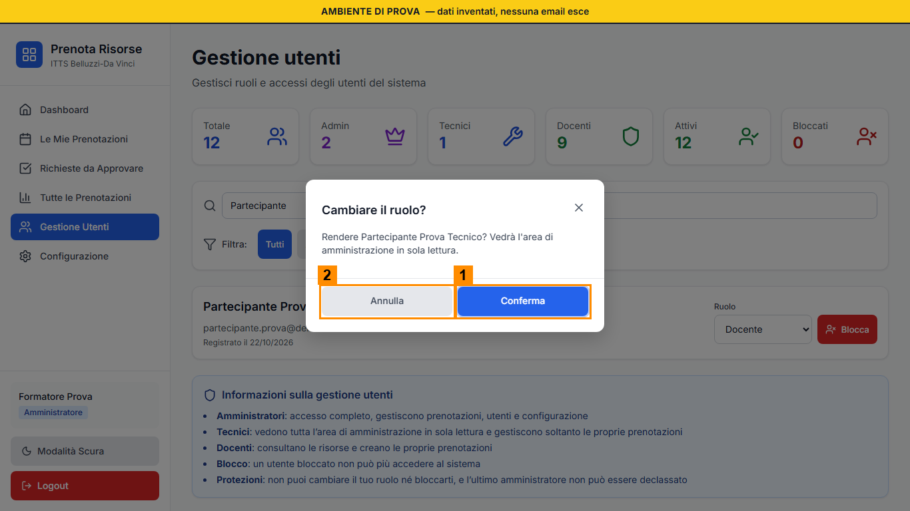
Scegliere chi riceve le richieste
- In Configurazione, Gestione risorse, ogni risorsa mostra le etichette: Richiede approvazione (1 nell'immagine) e Richieste a (2). I comandi sono icone con la descrizione al passaggio del mouse: la matita, Modifica risorsa (3), apre un modulo dentro la pagina.
- Nella sezione Chi riceve le richieste via email (1 nella seconda immagine) spunti gli Amministratori che devono ricevere le email con Approva e Rifiuta. Senza spunte le richieste arrivano a tutti gli Amministratori. Salva solo per la risorsa del tuo gruppo.
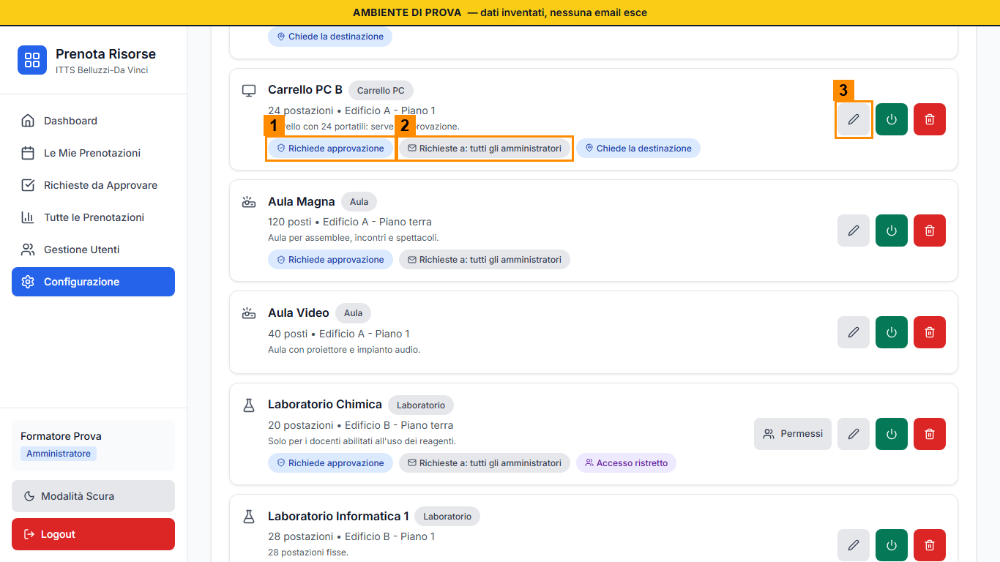

Cosa controllare
- Ogni decisione è registrata a tuo nome e il Docente riceve un'email.
- Un rifiuto ha sempre un motivo; una revoca anche.
- Dopo Salva permessi il Docente abilitato vede Visualizza calendario.
- Dopo un cambio di ruolo la persona è rientrata con Logout.
- Hai toccato solo la risorsa e le celle del tuo gruppo.